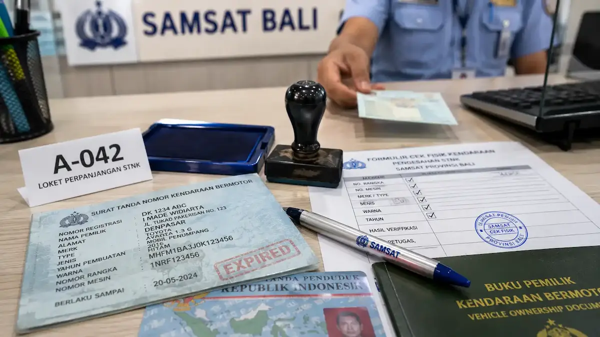
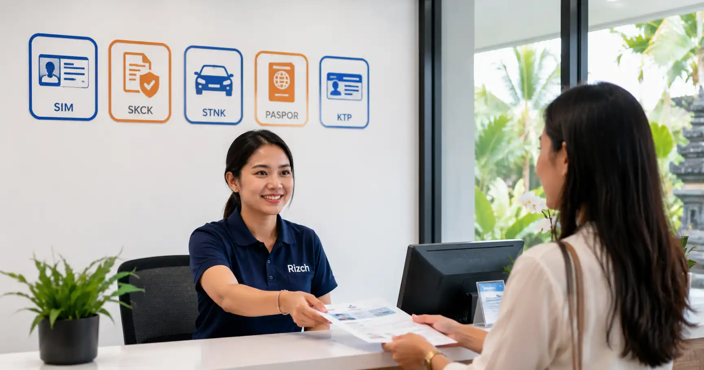
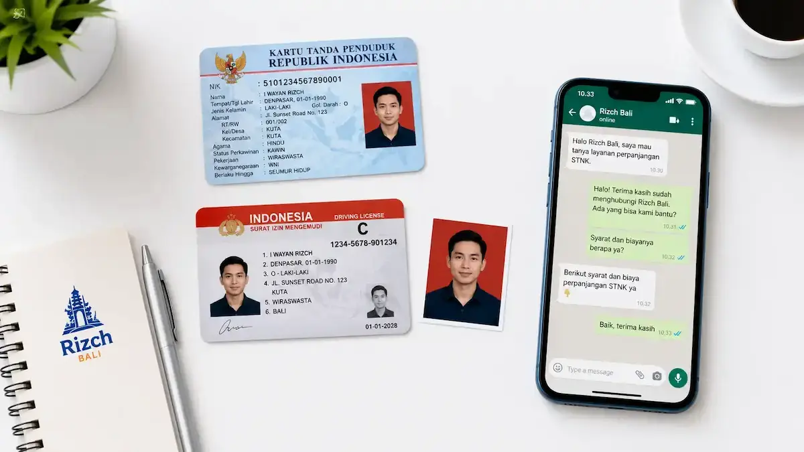
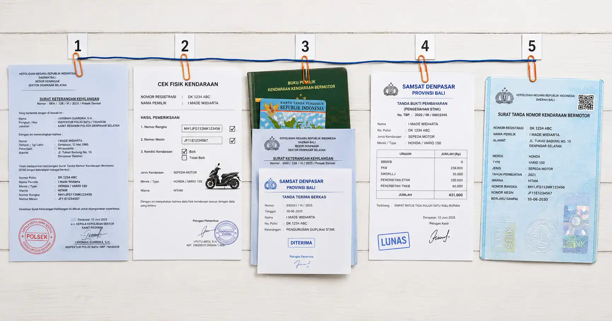

Syarat Perpanjang STNK di Bali
Ketahui syarat-syarat perpanjang STNK di Bali agar proses lebih lancar dan tidak bolak-balik ke Samsat.
Baca SelengkapnyaSolusi Cepat & Tepat untuk Pengurusan Dokumen di Bali
RizchBali adalah biro jasa Bali terbaik yang menyediakan layanan murah, terpercaya, dan online untuk pengurusan SIM, SKCK, STNK, paspor, KTP, KK, KITAS, KITAP, BPKB, KIR dan dokumen resmi lainnya di seluruh Bali. Proses cepat, aman serta harga transparan.

Solusi lengkap untuk kebutuhan dokumen kendaraan Anda di Bali
Layanan perpanjangan STNK tahunan dan 5 tahunan dengan proses cepat tanpa ribet mengantre di Samsat Bali.
Pengurusan balik nama kendaraan bermotor dengan dokumen lengkap dan proses aman sesuai peraturan Bali.
Layanan mutasi keluar dan masuk kendaraan antar provinsi dengan biaya transparan.
Pembuatan dan perpanjangan KIR untuk kendaraan niaga di wilayah Bali dengan proses efisien.
Pembuatan BPKB baru, duplikat, dan perubahan data dengan jaminan keaslian dokumen.
Pengurusan duplikat STNK hilang dengan prosedur resmi dan cepat di Samsat Bali.
Kami juga melayani pengurusan dokumen kependudukan, perjalanan, dan izin tinggal dengan proses cepat & aman.
Pembuatan paspor baru, perpanjangan, penggantian hilang/rusak. Proses ke Imigrasi Denpasar.
Pembuatan KTP baru, perubahan data, pindah domisili, dan pengurusan Kartu Keluarga.
Pembuatan SIM A/C/D baru, perpanjangan, dan SIM Internasional (IDP) untuk mengemudi di luar negeri.
Izin tinggal untuk WNA: KITAS (terbatas) & KITAP (permanen). Proses ke Imigrasi Bali.
Surat Keterangan Catatan Kepolisian untuk keperluan kerja, studi, atau administrasi lainnya.
Keunggulan layanan Biro Jasa Bali
Pengerjaan hanya 1-3 hari kerja. Tidak perlu mengantre lama di Samsat Denpasar atau wilayah Bali lainnya.
Tidak ada biaya tersembunyi. Harga sesuai kesepakatan di awal sesuai tarif resmi Samsat Bali.
Layanan antar jemput dokumen untuk wilayah Kota Denpasar, Praktis dan hemat waktu.
Seluruh dokumen asli dan resmi dari Samsat Bali & instansi pemerintah. Uang kembali jika gagal.
Tim ahli siap membantu konsultasi 24/7 via WhatsApp mengenai permasalahan dokumen kendaraan di Bali.
Melayani seluruh kabupaten dan kota di Bali, dari Denpasar hingga Jembrana dan Karangasem.
Melayani antar jemput dokumen di Kota Denpasar
Informasi terbaru seputar dokumen kendaraan di Bali

Ketahui syarat-syarat perpanjang STNK di Bali agar proses lebih lancar dan tidak bolak-balik ke Samsat.
Baca Selengkapnya
Layanan pengurusan SIM A, C, D, hilang dan internasional di Bali cepat, aman, dan terpercaya.
Baca Selengkapnya
Panduan lengkap mengurus STNK hilang dengan syarat dan estimasi biaya terbaru di Bali.
Baca SelengkapnyaApa kata mereka tentang layanan kami di Bali
"Sangat puas! Saya di Ubud, dokumen dijemput dan diantar ke villa. Perpanjang STNK motor hanya 2 hari selesai. Harga transparan tanpa biaya tambahan."
"Proses balik nama mobil dari Jakarta ke Bali berjalan lancar. Timnya update terus via WhatsApp. Recommended untuk yang butuh jasa STNK di Bali!"
"Sudah 3 kali pakai jasa ini untuk perpanjang STNK mobil dan motor. Pelayanan ramah, cepat. Mantap! serta responsif"
Jawaban untuk pertanyaan yang sering diajukan seputar STNK di Bali
Untuk perpanjang STNK tahunan biasanya 1-2 hari kerja, sedangkan untuk STNK 5 tahunan (ganti plat) membutuhkan waktu 2-3 hari kerja. Kami akan menginformasikan perkiraan waktu saat penjemputan dokumen di wilayah Bali Anda.
Tidak hanya kendaraan! Kami juga melayani pengurusan Paspor (baru/perpanjangan), KTP & KK, SIM Lokal/Internasional, KITAS/KITAP, dan SKCK. Semua dengan proses cepat dan aman.
Anda bisa konsultasi gratis via WhatsApp untuk mengetahui estimasi biaya. Biaya tergantung jenis layanan, jenis kendaraan, dan kondisi dokumen. Kami akan berikan rincian transparan sebelum proses dimulai, tanpa biaya tersembunyi.
Bisa! Kami melayani mutasi masuk kendaraan dari luar Bali ke Bali, maupun mutasi keluar dari Bali ke provinsi lain. Prosesnya membutuhkan waktu 3-7 hari kerja tergantung kelengkapan dokumen.
Tentu saja! Semua dokumen yang kami urus adalah asli dan resmi dari Samsat Bali, Dishub Bali, dan instansi pemerintah terkait. Kami memberikan garansi uang kembali 100% jika terbukti dokumen palsu.
Hubungi kami sekarang untuk konsultasi gratis. Tim kami siap membantu mengurus STNK, BPKB, KIR, dan SIM Anda di seluruh wilayah Bali dengan cepat dan aman.